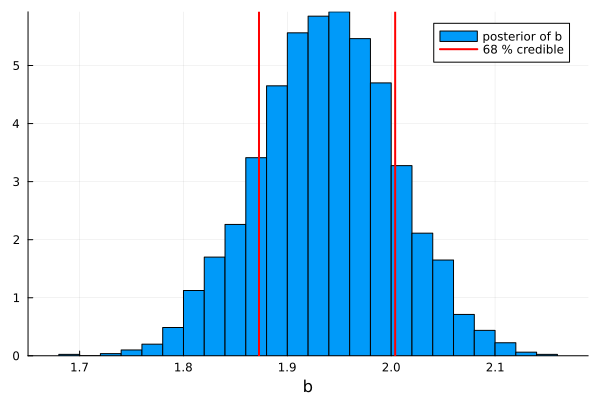

Bayesian posterior analysis
JuMinuit turns a converged Minuit fit into a posterior — prior × likelihood sampled in the parameter space — without leaving the fit object and without re-specifying the model. It is the native-Julia analogue of the common "MINUIT for the best fit, then an MCMC for the posterior" approach (in Python: iminuit + emcee).
It answers a different question from HESSE/MINOS:
A 68 % credible interval is a probability statement about the parameter given the prior and the data. It is not a frequentist confidence interval, a CLs limit, a Feldman–Cousins interval, or a MINOS error — even when the numbers look identical in the Gaussian interior. Always quote the prior.
Nothing here modifies the fit: it never writes into m.values, m.errors, m.covariance, MINOS state, or m.nfcn. See the error-analysis guide for how the Bayesian method sits beside HESSE / MINOS / profile bands / the likelihood-ensemble MCMC.
Defining the posterior
The posterior density is
\[\log p(θ \mid \text{data}) = -\,\frac{\text{fcn}(θ)}{2\,\text{up}} + \log\text{prior}(θ),\]
the faithful Minuit relation -2 log L = fcn/up. Keep errordef at its statistical value — up = 1 for a χ² (-2 log L) cost, up = 0.5 for a -log L cost — so the likelihood temperature is correct. Inflating up (e.g. to widen a MINOS interval) tempers the posterior by the same √up; put extra information in the prior, not in errordef.
A flat prior is flat in JuMinuit's external coordinates — a parameterization choice, not an "uninformative" / Jeffreys prior. Minuit limits are taken as physical posterior support (intersected with the prior support); if a limit was only there to stabilize the minimization, remove it and supply a proper prior.
One-line summary, and the posterior sample
using JuMinuit
report = bayesian(m; level = 0.6827) # flat prior; m is left untouched
report.summary # per-parameter credible table
# the lower-level, reusable object:
post = posterior_sample(m; prior = :flat, seed = 1)
credible_interval(post, :x; level = 0.6827) # (lo, hi) equal-tailed
posterior_mean(post, :x); posterior_median(post, :x); posterior_std(post, :x)Example 1 — flat prior reproduces the HESSE error (a calibration check)
In the Gaussian, near-linear interior a flat-prior credible interval matches the HESSE error — confirming the method is calibrated.
using JuMinuit, Statistics
xs = range(0, 1; length = 25)
data = 0.5 .+ 2.0 .* xs .+ 0.1 .* randn(length(xs))
σ = 0.1
χ²(p) = sum(((data .- (p[1] .+ p[2] .* xs)) ./ σ) .^ 2) # p = (intercept, slope)
m = Minuit(χ², [0.0, 0.0]; names = ["a", "b"]); migrad!(m); hesse!(m)
post = posterior_sample(m; prior = :flat, seed = 1)
ci = credible_interval(post, :b; level = 0.6827)
isapprox((ci[2] - ci[1]) / 2, m.errors[2]; rtol = 0.1) # credible half-width ≈ HESSE σ_bThe posterior is just a sample, so any picture follows directly — here the marginal for b with its 68 % credible interval:
using JuMinuit, Plots, Random
gr()
Random.seed!(1)
xs = range(0, 1; length = 25)
ys = 0.5 .+ 2.0 .* xs .+ 0.1 .* randn(25)
χ²(p) = sum(((ys .- (p[1] .+ p[2] .* xs)) ./ 0.1) .^ 2)
m = Minuit(χ², [0.0, 0.0]; names = ["a", "b"]); migrad!(m); hesse!(m)
post = posterior_sample(m; prior = :flat, seed = 1)
lo, hi = credible_interval(post, :b; level = 0.6827)
histogram(post.ensemble.samples[:, 2]; bins = 40, normalize = true,
label = "posterior of b", xlabel = "b", legend = :topright)
vline!([lo, hi]; label = "68 % credible", lw = 2, color = :red)
Example 2 — a near-zero signal: Bayesian upper limit
A signal strength μ ≥ 0 whose data prefer a small value. MINOS gives a one-sided profile interval; the Bayesian posterior concentrates at small μ, and the honest summary is a credible upper limit rather than a symmetric error (when the posterior mass sits on the limit, boundary_active flags it).
using JuMinuit
χ²(p) = ((p[1] + 0.3) / 0.5)^2 # data prefer μ ≈ -0.3, but μ ≥ 0
m = Minuit(χ², [0.1]; names = ["mu"], limits = [(0.0, nothing)])
migrad!(m); hesse!(m)
m.values[1] # best fit pinned at the limit, μ = 0.0
post = posterior_sample(m; prior = :flat, proposal = [0.5], seed = 2) # flat on [0, ∞)
ul = upper_limit(post, :mu; level = 0.90) # 90 % credible upper limit
ul.limit # ≈ 0.65 (prior-dependent)
ul.boundary_active # true ⇒ posterior mass piles at μ = 0upper_limit returns a CredibleLimit that prints as mu < … (90.0% Bayesian credible, prior=:flat) — it carries the prior provenance and is explicitly not a CLs / Feldman–Cousins limit.
Example 3 — nuisance parameter: profile vs marginalize
A signal s measured as obs = s + b with a background nuisance b pinned by an auxiliary measurement b = 1.0 ± 0.1 (a constraint term in the likelihood). The frequentist treatment profiles b (MINOS); the Bayesian treatment marginalizes b (integrates it out).
using JuMinuit
obs, σ, b0, σb = 5.0, 0.3, 1.0, 0.1
χ²(p) = ((obs - (p[1] + p[2])) / σ)^2 + ((p[2] - b0) / σb)^2 # s = p[1], b = p[2]
m = Minuit(χ², [4.0, 1.0]; names = ["s", "b"]); migrad!(m); hesse!(m)
minos!(m, "s") # frequentist: profile the nuisance b
m.merrors["s"]
post = posterior_sample(m; prior = :flat, seed = 3) # Bayesian: marginalize b
credible_interval(post, :s; level = 0.6827) # b integrated outWith everything Gaussian the two agree (s ≈ 4 ± √(σ² + σ_b²) ≈ 4 ± 0.32); they diverge, legitimately, when the s–b likelihood is curved. You can equally move the constraint out of the FCN and into a normal_prior(m, :b, b0, σb) — the same posterior, written as a prior instead of an auxiliary term.
Example 4 — a nonlinear derived quantity
Linear (HESSE) error propagation is unreliable for ratios, pole positions, branching fractions near zero, and threshold-sensitive quantities. The posterior propagates them by sample evaluation — no delta method, no linearization.
using JuMinuit, Statistics
# two yields y1, y2; we want the ratio R = y2 / y1
χ²(p) = ((p[1] - 10.0) / 2.0)^2 + ((p[2] - 3.0) / 2.0)^2
m = Minuit(χ², [10.0, 3.0]; names = ["y1", "y2"]); migrad!(m); hesse!(m)
post = posterior_sample(m; prior = :flat, seed = 4)
Rlo, Rhi = derived_interval(post, p -> p[2] / p[1]; level = 0.6827)derived_interval(post, f) evaluates f(θ_full) on every kept sample and takes quantiles; the same ensemble also feeds quantile_band for a pointwise band of a whole model curve.
Example 5 — nuclear EFT: naturalness priors and a truncation band
A degree-of-belief use case (Furnstahl, Klco, Phillips, Wesolowski, Phys. Rev. C 92, 024005 (2015)): an EFT observable O(Q) = Σ_{n} c_n (Q/Λ)^n with naturalness priors c_n ~ N(0, 1). Fit the coefficients with their priors, then read the truncation error as the posterior of the first omitted term.
using JuMinuit, Statistics
Λ = 0.6
Qgrid = [0.10, 0.15, 0.20, 0.25, 0.30]
Odata = [1.19, 1.31, 1.44, 1.59, 1.75] # ≈ 1 + (Q/Λ) + (Q/Λ)^2
model(Q, c) = c[1] + c[2]*(Q/Λ) + c[3]*(Q/Λ)^2 # truncated at n = 2
χ²(c) = sum(((Odata .- model.(Qgrid, Ref(c))) ./ 0.02) .^ 2)
m = Minuit(χ², [1.0, 1.0, 1.0]; names = ["c0", "c1", "c2"]); migrad!(m); hesse!(m)
priors = combine_priors(normal_prior(m, :c0, 0.0, 5.0), # loose on the constant
normal_prior(m, :c1, 0.0, 1.0), # naturalness
normal_prior(m, :c2, 0.0, 1.0))
post = posterior_sample(m; prior = priors, seed = 5)
# truncation degree-of-belief band at Q: next term c₃ (Q/Λ)³, c₃ ~ N(0,1)
Q = 0.30
dob68 = quantile(abs.(randn(20_000)) .* (Q/Λ)^3, 0.68) # |c₃|·(Q/Λ)³, 68 % DoBThis is the starting point; a full EFT analysis adds a theory-covariance / discrepancy term and a breakdown-scale hyperparameter — JuMinuit provides the logprior and the sampling to build that, it does not assume it for you.
Example 6 — a published coupled-channel fit: the X(6200), and a near-unitary scattering length
Example 4 propagated a ratio; the same calls carry the derived quantities of a published analysis — the near-threshold state X(6200) from the two-channel fit to the LHCb double-J/ψ spectrum (Dong, Baru, Guo, Hanhart, Nefediev, Phys. Rev. Lett. 126, 132001 (2021); full analysis at fkguo/double_jpsi_fit). The coupled channels are J/ψ J/ψ and ψ(2S) J/ψ; a unitarity-consistent T-matrix T = N·(1 − G·V)⁻¹ with five contact couplings (a1, a2, c, b1, b2) has a pole on the second Riemann sheet just above the J/ψ J/ψ threshold (6.194 GeV) — the X(6200). We want its pole mass, effective range r, compositeness X̄_A (molecular weight), and scattering length a — each a strongly nonlinear functional of the couplings (the pole is even located by a numerical root search on det(1 − G·V) = 0, so there is no analytic Jacobian for a linear propagation). We start from the published best fit and its covariance, and propagate by sample evaluation:
using JuMinuit, LinearAlgebra, Statistics
# === two-channel amplitude (J/ψJ/ψ and ψ(2S)J/ψ), faithful to the PRL ===
const mJ, mψ2, ħc = 3.0969, 3.686097, 0.197327 # masses (GeV), ħc (GeV·fm)
kallen(a,b,c) = a^2+b^2+c^2-2a*b-2b*c-2a*c
qsq(w,m1,m2) = kallen(w^2,m1^2,m2^2)/(4w^2) # c.m. momentum²
xsqrt(z) = imag(z) ≥ 0 ? sqrt(z+0im) : -sqrt(z-0im) # cut along +real axis
ρ(w,m1,m2) = xsqrt(qsq(w,m1,m2)+0im)/(8π*w) # two-body phase space
function Gdr(w,m1,m2,sub=-3) # dim-reg two-point loop
s=w^2; Δ=m1^2-m2^2; q=xsqrt(kallen(s,m1^2,m2^2)+0im)/(2w)
1/(16π^2)*(sub+2log(m1)+(m2^2-m1^2+s)/s*log(m2/m1) + q/w*
(log(s-Δ+2q*w)+log(s+Δ+2q*w)-log(-s+Δ+2q*w)-log(-s-Δ+2q*w)))
end
function Tden(w, p, rs) # (numerator, denominator) of T₁₁
a1,a2,c,b1,b2 = p
v11=(a1+b1*qsq(w,mJ,mJ))*4mJ^2; v22=(a2+b2*qsq(w,mψ2,mJ))*4mJ*mψ2; v12=c*4mJ*sqrt(mJ*mψ2)
g11=Gdr(w,mJ,mJ); g22=Gdr(w,mψ2,mJ); rs==2 && (g11 += 2im*ρ(w,mJ,mJ)) # sheet II
num = -g22*v11*v22 + g22*v12^2 + v11
num, 1 - g11*num - g22*v22
end
function T11(w, p, rs=1)
n, d = Tden(w, p, rs); n/d
end
# === derived quantities (each a nonlinear functional of the 5 couplings) ===
a_fm(p) = -real(T11(2mJ, p))/(16π*mJ)*ħc # scattering length — DIVERGES near unitarity
inv_a(p) = 1/a_fm(p) # 1/a: the well-defined variable
function r_fm(p) # effective range (threshold derivative)
th, ϵ, μ = 2mJ+1e-7, 1e-8, mJ/2
d = real(1/T11(th,p)) + th*(real(1/T11(th+ϵ,p)) - real(1/T11(th,p)))/ϵ
-8π/μ*d*ħc
end
X_A(p) = (a=a_fm(p); r=r_fm(p); sqrt(1/(1+2abs(r/a)))) # compositeness (molecular weight)
function Mpole(p; w0=6.2026+0.0116im) # RS-II pole: T denominator = 0
w = w0
for _ in 1:60
f = Tden(w,p,2)[2]; df = (Tden(w+1e-7,p,2)[2]-f)/1e-7; w -= f/df
end
real(w) # pole mass (GeV)
end
# === the published 2-channel fit: best-fit couplings + covariance (from its Δχ² ensemble) ===
best = [0.19339, -4.18333, 2.94252, -1.75476, -7.10517] # (a1, a2, c, b1, b2)
Σ = [ 0.0834 0.0498 0.0141 -0.0629 0.0090
0.0498 0.0882 -0.0044 -0.0432 0.0273
0.0141 -0.0044 0.0233 -0.0217 0.0032
-0.0629 -0.0432 -0.0217 0.0598 -0.0160
0.0090 0.0273 0.0032 -0.0160 0.0388 ]
C = inv(Σ)
χ²(p) = (d = p .- best; dot(d, C * d)) # Gaussian: posterior is N(best, Σ)
m = Minuit(χ², best; names=["a1","a2","c","b1","b2"]); migrad!(m); hesse!(m)
# === Bayesian propagation to the X(6200) properties (gradient-free ensemble) ===
post = posterior_sample(m; sampler=:stretch, nsteps=6000, seed=2024, warn=false)
S = post.ensemble.samples
quant(f) = round.(quantile([f(S[i,:]) for i in 1:size(S,1)], (0.16, 0.5, 0.84)); digits=2)
(M_pole = quant(Mpole), # ≈ (6.18, 6.20, 6.22) GeV — the X(6200)
r = quant(r_fm), # ≈ (-2.66, -2.15, -1.83) fm
X_A = quant(X_A), # ≈ (0.26, 0.40, 0.65) — sizable molecular weight
inv_a = quant(inv_a)) # ≈ (0.07, 1.23, 2.62) /fm ⇒ |a| ≳ 0.4 fm (a itself diverges)The best-fit centrals reproduce the paper exactly — pole 6.20 GeV, r = −2.18 fm, X̄_A = 0.39 (a sizable molecular component) — and we obtain an interval for each. The scattering length is the instructive case, and the reason a naive interval misleads: near the unitary limit a diverges, so its posterior straddles ±∞ (samples of both signs) and an equal-tailed credible interval on a is meaningless. The well-defined variable is 1/a; the posterior keeps it away from a tight band around zero, i.e. |a| ≳ 0.4–0.5 fm — exactly the paper's disjoint a₀ ≤ −0.49 or ≥ 0.48 fm. The general lesson: reparametrize a derived quantity that can diverge (report 1/a, a bound, or an HPD region), never equal-tailed quantiles across a pole.
Two honest caveats. These are Bayesian credible intervals; the paper quotes frequentist Δχ² (profile) ranges — they answer different questions (see the top of this page) and differ for these strongly nonlinear near-unitary quantities. And the covariance used here is a representative one from the published Δχ² ensemble (tighter than the full fit covariance), so these widths are illustrative — the fully runnable, data-backed version fits the real LHCb spectrum, searches all four Riemann sheets, reproduces the paper's Table, classifies the near-threshold pole by sheet (as 1/a changes sign the X(6200) crosses between a bound state on sheet I and a virtual/resonance on sheet II — Mpole above forces sheet II and so only sees the resonance branch), and shows that the honest data-fit posterior is much broader (adding a causality prior leaves it essentially unchanged — physical curation is not what makes the published bars tight): BenchmarkExamples/X6200_double_jpsi. The sampler is :stretch because this χ² runs through complex logarithms and Riemann-sheet square roots and is not auto-differentiable — the gradient-free ensemble is the appropriate choice (see the table below).
Choosing a sampler
posterior_sample(m; prior = pr) # default sampler: :stretch
posterior_sample(m; sampler = :stretch, prior = pr) # affine-invariant ensemble (the default)
posterior_sample(m; sampler = :metropolis, prior = pr) # HESSE-preconditioned random walk
posterior_sample(m; sampler = :nuts, prior = pr) # NUTS (needs the AdvancedHMC ext):stretch (default) | :metropolis | :nuts (HMC) | |
|---|---|---|---|
| moves | Goodman–Weare stretch move (the emcee algorithm) | Gaussian random walk, HESSE-preconditioned | gradient-guided NUTS (AdvancedHMC) |
| gradients | none — works for any FCN | none | requires an auto-differentiable FCN |
| correlated / high-dim | affine-invariant; good | mixes slowly | scales best to high dimension |
| options | nwalkers, stretch | proposal, scale, target_accept, overdisperse | target_accept, nchains |
| availability | built in | built in | extension (see below) |
The default is :stretch, the affine-invariant ensemble (the emcee algorithm). It needs no gradients, so it works for any FCN — including the complex-amplitude χ² common in hadron physics, which is typically not auto-differentiable — and its affine invariance keeps it efficient even when the posterior is strongly correlated. It is the de-facto standard in HEP and astrophysics, which makes it the safe choice when you would rather not think about tuning a proposal.
Switch to :metropolis for inexpensive, near-Gaussian posteriors, where a HESSE-preconditioned random walk is already adequate and its per-chain R̂ / split diagnostics are convenient. Switch to :nuts for higher-dimensional, smooth, auto-differentiable posteriors, where gradient information makes it the most efficient — but it errors (rather than silently degrading) on a non-differentiable FCN or a best fit sitting on a parameter limit.
Enabling NUTS
sampler = :nuts is provided by a package extension, loaded when the required packages are present:
using JuMinuit
using AdvancedHMC, LogDensityProblems, LogDensityProblemsAD, TransformVariables, ForwardDiff
post = posterior_sample(m; sampler = :nuts, prior = pr, seed = 1)Bounded parameters are mapped to unconstrained ℝ (log / logit) with the proper log-Jacobian, sampled by NUTS, and transformed back to external coordinates; the gradient comes from ForwardDiff. There is no finite-difference fallback — a non-differentiable FCN raises a clear error pointing you to :stretch.
All built-in cost objects — including BinnedNLL / ExtendedBinnedNLL — are ForwardDiff-differentiable, so :nuts works on them as long as the model / pdf / cdf you supply is itself auto-differentiable. A user function that internally fixes its type to Float64 (e.g. a complex-buffer χ² common in hadron physics) still needs the gradient-free :stretch.
Diagnostics and honesty checks
post = posterior_sample(m; prior = pr, nchains = 4, seed = 1)
maximum(post.rhat) < 1.01 # split-R̂ across chains/walkers (want ≈ 1)
minimum(post.ess) # effective sample size per parameter
post.warnings # boundary pile-up, etc.rhatis the basic split-R̂ (not rank-normalized / folded); for a skewed or boundary-truncated marginal also checkeffective_sample_sizeand the trace.- A
boundary_activeflag means posterior mass piles against a parameter limit — report an upper/lower limit there, not a symmetric error. - If
minimum(post.ensemble.fvals) < post.ensemble.fbest, the chain found a deeper minimum: re-minimize (seefind_deeper_minimum) before quoting anything.
See the API reference (the "Bayesian posterior analysis" section) for the full symbol list, and the error-analysis guide for how this sits beside HESSE / MINOS / profile bands / the likelihood ensemble.